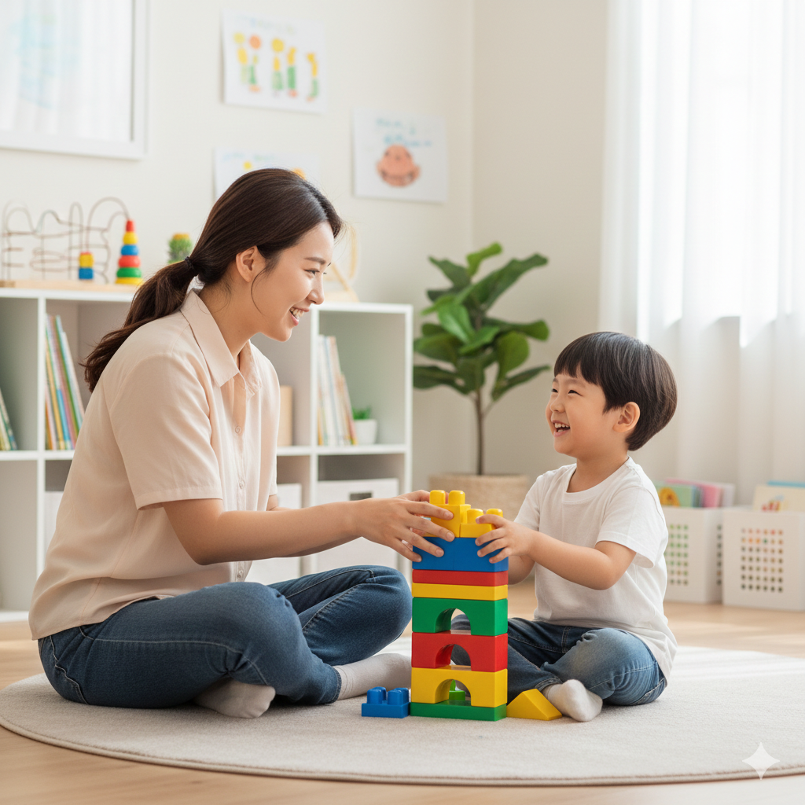

아이의 성장은 기다림이 아닌, 전문적인 돌봄의 영역입니다.
말자람터 언어심리연구소는 아이의 숨겨진 목소리에 귀 기울이고, 건강한 자아를 형성하도록 돕는 성장의 터전입니다.

아이의 눈높이에서 진심으로 교감하며, 잠재된 가능성을 함께 찾아나가는 말자람터의 약속입니다.
1. '터'가 가진 의미, 안전한 성장의 공간
아이들이 자신의 속도와 방식으로 자유롭게 표현하고, 실패를 두려워하지 않는 심리적 안전지대를 제공합니다. 친환경적이고 편안한 환경 설계로 치료 효과를 극대화합니다.
2. 통합 심리 치료의 철학
언어만, 놀이만 따로 보지 않습니다. 아이의 모든 발달 영역은 연결되어 있다는 믿음 아래, 전문 분야 간 협진 시스템을 구축합니다. 단순히 '증상'을 없애는 것이 아닌, 아이의 전반적인 '삶의 질' 향상을 목표로 합니다.
3. 부모님과의 동행
치료의 진정한 완성은 가정에서 이루어집니다. 정기적인 부모 상담과 교육을 통해 아이의 변화를 함께 관찰하고 지원하며, 치료의 연속성을 확보합니다.